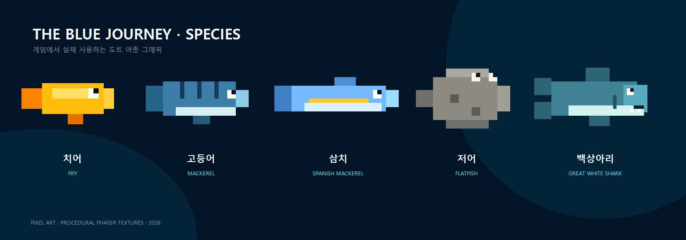
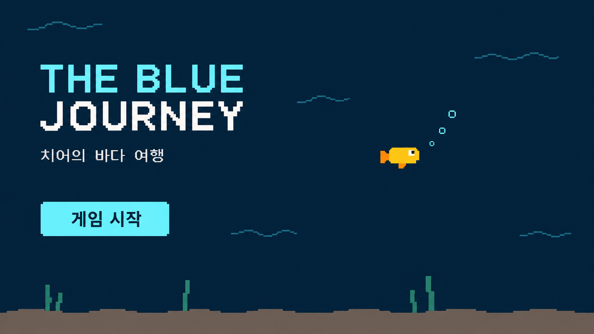
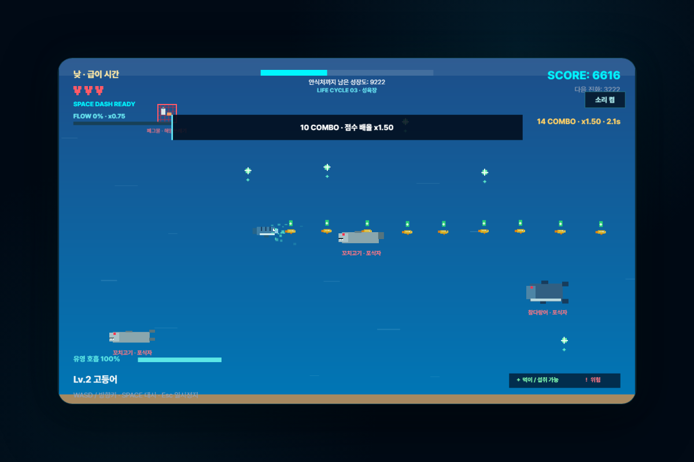
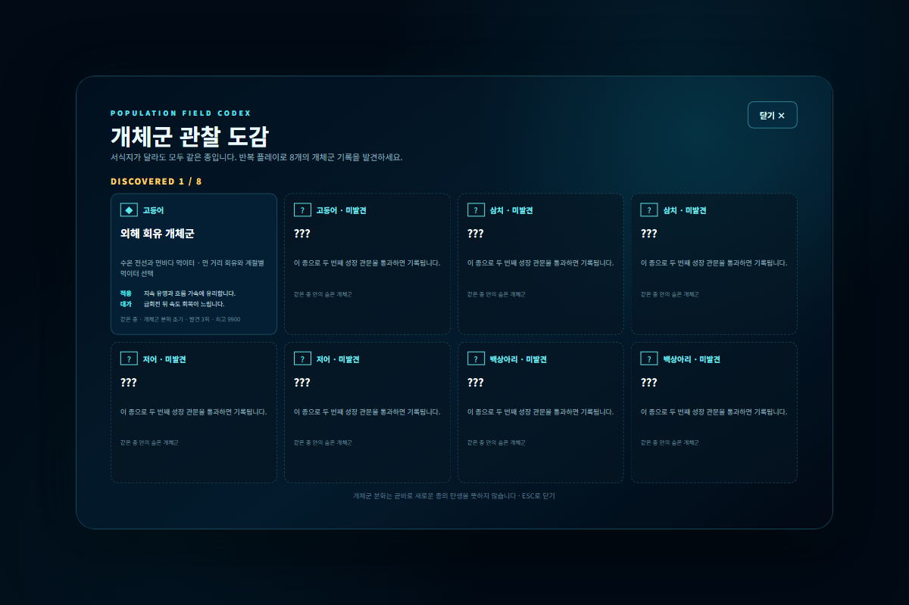

GAME DESIGN · DEVELOPMENT · ITERATION
문제를 정의하고,
플레이 가능한 게임으로
구현하고 개선합니다.
게임의 재미가 부족한 이유를 관찰하고, AI와 협업해 기능을 구현한 뒤 실제 플레이로 다시 검증하며 확장합니다. 기획과 개발의 경계를 넘나드는 윤정현입니다.

FEATURED PROJECTThe Blue Journey
01 · FEATURED PROJECT
치어에서 번식까지,
해양 생태를 직접 플레이하다.
The Blue Journey는 해양 생태 교육 데모에서 시작해, OpenAI 게임 해커톤 출품을 계기로 생존·수집·스토리 시스템을 확장한 진행형 2D 게임입니다.
교육용 데모에서 시작
생존 · 수집 · 생애주기 시스템 확장
직접 조작하는 경험으로 전환
Game Designer · Lead Developer
사운드 · 통합 QA 약 90%
피드백을 반영하며 계속 개선 중
MY OWNERSHIP
아이디어를 정하는 데서 멈추지 않고,
플레이 가능한 빌드까지 연결했습니다.
2인 팀에서 프로젝트 리드로 참여했습니다. 팀원이 플레이테스트와 검수를 맡았고, 저는 문제 정의부터 시스템 설계, 구현, 화면 통합과 최종 QA까지 제작 전반을 담당했습니다.
90%
기여도
직접 설계·구현한 범위
직접 설계·구현한 범위
성장 단계, 어종별 생존 전략, 즉시 보상과 재도전 목표를 게임 규칙으로 정의했습니다.
프레임 독립 이동과 충돌, 포식자 상태 전환, 저장 시스템과 반응형 UI를 구현했습니다.
피격 연출, 사운드, 속도와 충돌 범위를 조정하고 실제 Chrome 입력으로 결과를 확인했습니다.
GAME DESIGN
생태 정보가
게임 규칙이 되도록.
부화부터 산란까지의 성장 단계를 플레이 목표로 바꾸고, 어종별 생태 차이를 속도·호흡·야간 행동 규칙에 반영했습니다.
01부화알에서 깨어나는 시작
02자어기먹이 탐색과 위험 학습
03성육장종과 개체군 전략 선택
04성어기서식지 도착과 생존
05산란번식으로 생애주기 완성

PLAYER MOTIVATION
플레이할 이유를
세 개의 시간축으로 설계했습니다.
조작 직후의 손맛, 한 판을 버티는 긴장감, 엔딩 뒤의 재도전 목표가 서로 이어지도록 시스템을 배치했습니다.
즉시 보상
같은 방향으로 유영하면 FLOW가 차오르고, 2.2초 안에 먹이를 이어 먹으면 콤보 배율이 상승합니다.
조작을 잘했다는 감각생존 긴장
LIFE와 피격, 5초 포식자 추격, 성장 단계 도착 목표가 위험을 판단하고 회피할 이유를 만듭니다.
끝까지 살아남을 이유수집과 재도전
4종 어류와 8개 개체군의 선택 결과를 관찰 도감에 저장해 다른 전략으로 다시 플레이하게 했습니다.
학습 기록을 채울 이유1.5sFLOW 형성 시간
0.75–1.10×유영 속도 변화
2.2s먹이 콤보 유지
5s포식자 추격 시간
8수집 가능한 개체군
DEMO → HACKATHON BUILD → ONGOING
데모 버전에서 시작해,
해커톤 출품을 계기로 플레이 동기를 확장했습니다.
출품 과정에서 실제 플레이에 부족한 이유를 하나씩 찾아 규칙으로 바꿨고, 현재도 피드백을 반영하며 개선하고 있습니다.

01실패가 없다LIFE와 피격·회복 조건 추가
02패턴이 반복된다경고·추격·결과가 있는 포식자 이벤트
03한 번 끝나면 목표가 없다개체군 선택과 관찰 도감 저장
04생태 스토리가 보이지 않는다부화부터 산란까지 성장 장면 연결
ITERATION LOG
기능 목록보다
판단 과정을 남겼습니다.
관찰한 문제를 가설과 완료 조건으로 바꾸고, 구현 뒤 다시 플레이하며 채택 여부를 결정했습니다.
실패 위험이 없어
긴장감이 약하다
판단 회피와 생존을 판단할 자원이 필요했습니다.
구현 LIFE, 피격, 회복, 실패 조건을 추가했습니다.
위험 요소가 실제 선택으로 변화반복 구간이
같은 패턴으로 흐른다
판단 예고된 돌발 상황이 흐름을 깨야 했습니다.
구현 경고 후 5초 추격, 제한 선회와 세 가지 퇴장 결과를 설계했습니다.
수동 회피가 능동 생존 플레이로 변화엔딩 후 다시
플레이할 이유가 없다
판단 학습 기록을 수집 목표로 바꾸기로 했습니다.
구현 개체군 선택, 관찰 도감, 로컬 저장을 연결했습니다.
다른 선택으로 기록을 채우는 반복 루프빠른 장애물 때문에
위험을 읽기 어렵다
판단 속도감은 유지하되 반응할 시간을 보장해야 했습니다.
구현 포식자·폐그물 속도와 충돌 범위를 조정하고 경고·색·사운드를 분리했습니다.
눈의 피로를 줄이고 조작 납득도 향상


AI COLLABORATION
AI가 답을 정하지 않도록,
문제와 완료 조건을 통제했습니다.
제가 맡은 일
- 플레이에서 부족한 재미 정의
- 생태 정확성과 게임성의 우선순위 결정
- 충돌 범위와 피드백의 완료 기준 설정
- 코드와 화면 검토 후 채택 여부 판단
- 실제 입력으로 플레이 QA
AI에게 맡긴 일
- 구현 방법과 코드 초안 탐색
- 버그 원인 후보와 수정 범위 정리
- Phaser 구조화와 리팩터링 제안
- 검증 체크리스트와 테스트 후보 생성
- 반복 수정의 작업 속도 보조
문제 정의 제약 구조화 AI 구현 후보 코드·화면 검토 플레이 QA
ENGINEERING & QA
새 도구를 배우고,
검증 가능한 구조로 옮겼습니다.
HTML 프로토타입을 Phaser와 TypeScript 구조로 이식하고 Scene, Data, System, Config의 변경 범위를 분리했습니다.
Phaser 4.2.1TypeScript 6ViteFrame-independent movementLocalStorageResponsive UI
LET'S BUILD THE NEXT PLAY
피드백을 다음 플레이 규칙으로 바꾸는
AI Game Maker가 되겠습니다.
윤정현 · Game Design / Development / QA